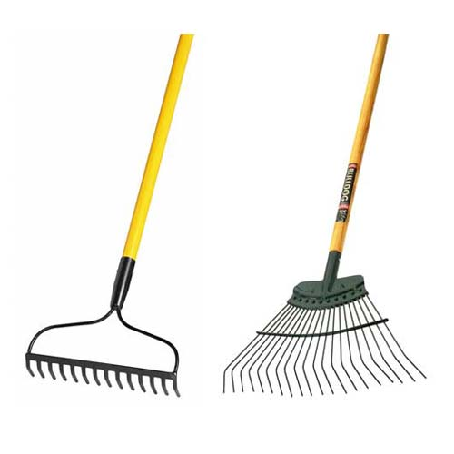

Garden Rakes

Rakes are used in gardening in order to scoop, scrape or gather. Other rakes can be used as a tool for leveling materials like soil, mulch, or leaves. Some rakes have flat heads, most have sharp metal tines used to break up compacted soil or rock.